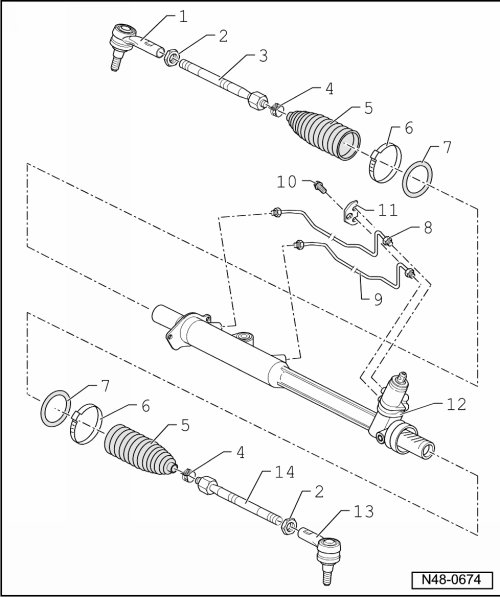

Power Steering Gear Component Overview
Power Steering Gear Component Overview

1 Right tie rod end
• Marked with "R".
• Check dust caps for damage and correct seating.
• Conical pin must be free of grease and oil.
• If necessary, clean using dry cloth, do not use cleaning agents.
2 Nut
• 70 Nm.
3 Right tie rod
• 100 Nm.
• Removing and installing, refer to --> [ Tie Rod ] [1][2]Service and Repair.
4 Spring clamp
5 Boot
• Check for damage.
• Must not be twisted when toe is being adjusted.
6 Clamp
• Replace.
7 Sealing ring
• Replace.
8 Control line
• 7 Nm.
• When installing, make sure that the O-ring is not damaged.
• Make sure not under tension when installing.
• Do not damage surface, repair paint damage as necessary.
9 Control line
• 7 Nm.
• When installing, make sure that the O-ring is not damaged.
• Make sure not under tension when installing.
• Do not damage surface, repair paint damage as necessary.
10 Torx bolt
• 12 Nm.
11 Backing plate
12 Power steering gear
• Removing and installing, refer to --> [ Power Steering Gear ] Power Steering Gear.
13 Left tie rod end
• Marked with "L".
• Check dust caps for damage and correct seating.
• Conical pin must be free of grease and oil.
• If necessary, clean using dry cloth, do not use cleaning agents.
14 Left tie rod
• Removing and installing, refer to --> [ Tie Rod ] [1][2]Service and Repair.
• 100 Nm.